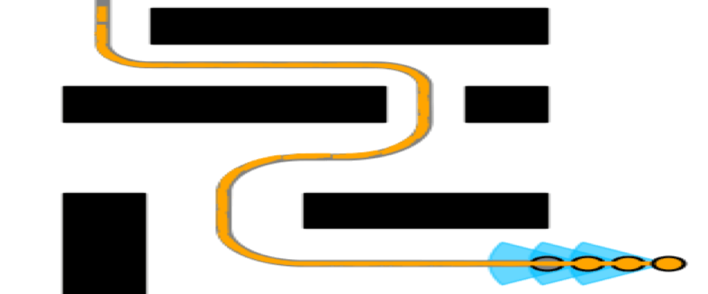
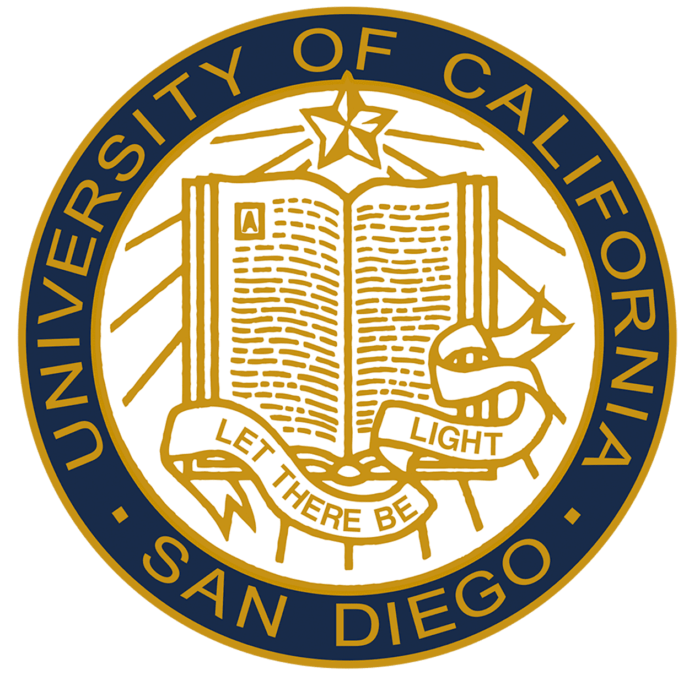

Publication Title Goes Here
Conference or Journal, Year
One-to-three sentence summary of the technical contribution, emphasizing the problem, method, and result.
Robotics Ph.D. candidate working on control, motion planning, and intelligent automations.
Hi, I’m Henry. I work at the intersection of robotic control, planning, autonomy, and intelligent automation, with a focus on reliable real-world robotic systems. My interests include classical, optimal, and learning-based control, motion planning, and autonomous systems in dynamic environments.
My recent work includes multi-robot obstacle avoidance, precision vehicle longitudinal control, GPU-accelerated trajectory sampling, and learning-based inverse modeling. I am particularly interested in combining classical control with data-driven adaptation.
I am currently looking for opportunities in robotics, controls, autonomy, and embodied AI where I can contribute to high-performance robotic systems deployed outside the lab.


One-to-three sentence summary of the technical contribution, emphasizing the problem, method, and result.
Reimplemented a Python tracking pipeline as a structured C++ ROS node. The system estimates relative leader motion from AprilTag observations, transforms local states into the global frame, maintains an Eigen trajectory buffer, and publishes filtered references for downstream controllers.

Ported MPPI cost evaluation from NumPy to JAX, starting with parallel rollout evaluation using jax.vmap. The goal is to improve controller throughput while preserving readable algorithmic structure.

Explored learning an inverse dynamics model for an inverted pendulum system to improve feedforward compensation. The project studies how learned model components can complement classical feedback control.